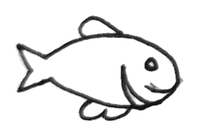
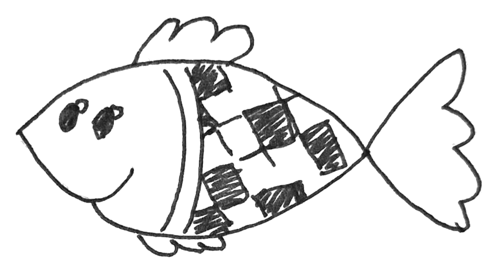
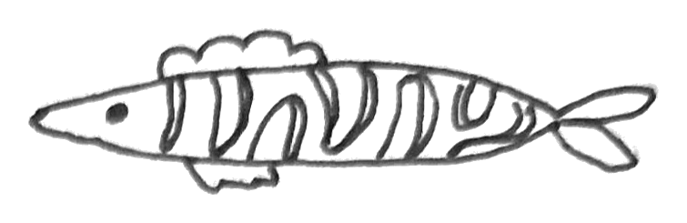
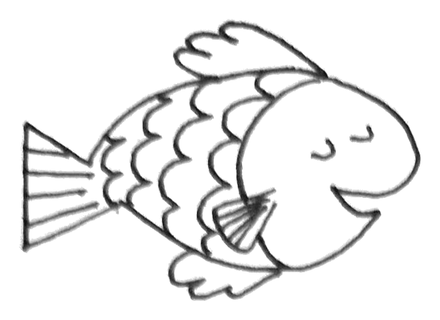
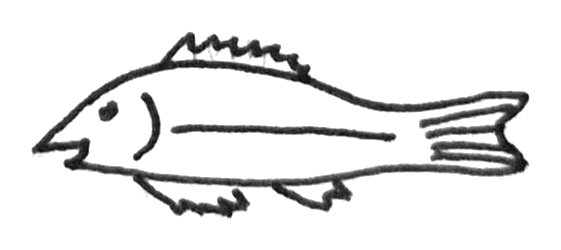
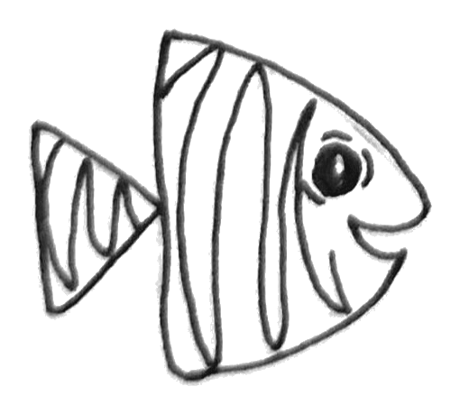
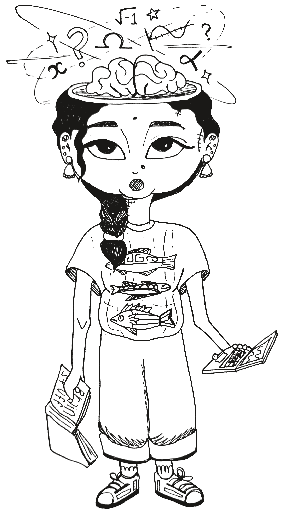
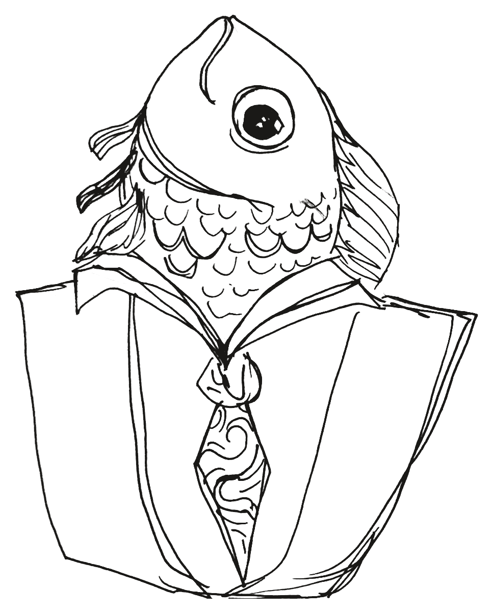
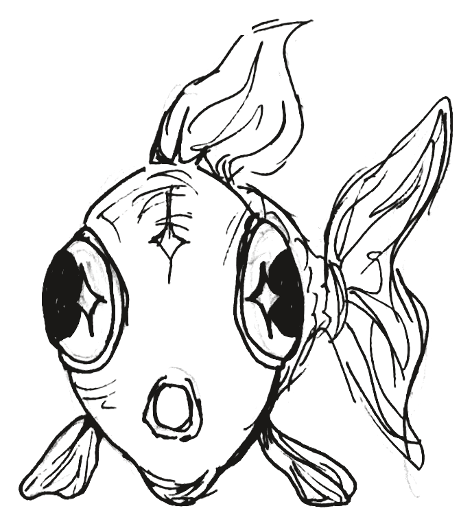

About Me
Hey! I am Manju Kashika, a Cognitive Neuroscience graduate who really likes research and art. I completed my BSc Psychology from India and switched to a more maths, coding and anatomy focused MSc Cognitive Neuroscience course in the UK. This transition was a pain in the tail. I also forget things. Not a great combination for someone aspiring to be a researcher.
The மீன் / Mean project is for me to document the process of figuring out advanced mathematics, statistics, physics for neuroscience research application, for my own goldfish memory and other fellow fish floating trying to explore the intricacies of sciences. I am hoping to put my art, research skills and blind perseverance to making this work for myself and hopefully for a few others.
WISH ME LUCK. T_T
Goldfish Diary
Despite popular myth, goldfish can apparently hold onto memories for months— but I have realized my long-term memory is lacking the length (ironic that my research interest is memory). The goldfish diary is my public study log and self-curated curriculum. While ONE textbook or online course is not gonna do it all, it is all out there and this journey is gonna take a long time. Should be a fun new nerd adventure.

Maths
▶ High school math resources 18 Topics
| Concept | Definition | Application | Resources |
|---|---|---|---|
| Map of mathematics | Domain of Science YT Channel | fun 10 min video to get an overview of pure math and applied math, history, number systems, geometry, calculus and how it is applied. A good start to understand how everything is connected because the connections got overwhelming for me when the lectures assumed you already know of it. | YouTube ↗ |
| All of math playlist | Professor Dave Explains YT Channel | all of high school with formulas and math in quick 10 min videos. Probably the best start to get a quick background of everything we will come across much more in detailed later. | Playlist / Link ↗ |
| Lockdown mathematics playlist | Infamous 3B1B YT Channel that you will see throughout | made for highschoolers during lockdown, much longer 1 hr live recorded videos, but super informative in understanding derivations of each formula, with sums. Can get overwhelming because they move through concepts fast and the audience seems to always know the answer when i sometimes struggled. | YouTube ↗ |
| Set theory | Set is collection of distinct items where order does not matter and there is no repetition. {} Elements of a set need not be related at all but MUST BE WELL DEFINED. Represented as a roster listing all elements one by one {each,item,separated,by,commas} or as a a set builder form {x:followed by the condition that x follows that acts as a filter}. | Basis for discrete math; also very common in coding | YouTube ↗ |
| Types of sets | Finite set, Infinite set, Equal sets, Equivalent sets (same number of element), Singleton (one element), empty/nut set (no elements), subset and superset, power sets, universal set | Follow several algebraic rules. The notations are extremely annoying but commonly used. Set notation, union (∪), intersection (∩), complement ('), Cartesian product (A × B), De Morgan Laws (describe how the complement of a set interacts with the union and intersection of sets.). Helpful to google 'set theory notation cheat sheet. | YouTube ↗ |
| Intervals | A connected subset of numbers containing all numbers that lie between two designated endpoints a and b (where a < b). | Open Interval (a, b), Closed Interval [a, b], Half-Open / Half-Closed Interval: Includes only one endpoint [a, b) or (a, b], Infinite Interval [a, ∞) or (-∞, b]. | — |
| Absolute value | bsolute value of a number represents its distance from zero on the number line, regardless of direction. It is always non-negative | denote by |x| | YouTube ↗ geeksforgeeks.org ↗ |
| Information theory | Fundamental part of all communication; taking sections and putting it together to convey/understand something. Unit of message/information= bit. | Machine learning statistics is based on data compression and the information theory. Shannon entropy and joint multivariate entropy. Relative entropy (Kullback-Beiber divergence). I have not understood these in detail now. But the video goes through all of this briefly. | YouTube ↗ YouTube ↗ |
| Function | Explains how one set relates to another. Input set (domain) and output set (range). Sort of a machine that takes an input x and gives you exactly one output f(x). One input cannot give 2 outputs. | Has specific arithmetic rules that it follows. Especially with the second set. | YouTube ↗ |
| Rational Functions | Ratio of two polynomial functions f(x)= p(x)/q(x), where p & q are polynomial and q(x) is not 0. Asymptotes (lines that a graph approaches but never touches). Discontinuities ('holes' in graph where a denominator hits zero. | Pre-calculus topic. | - |
| Partial fraction decomposition | Take a single fraction and separate it into smaller fractions, by factoring the denominator | Pre-calculus topic. Relevant for Laplace | YouTube ↗ |
| Exponentials | Variable at the power [not the base] (ax)Exponential growth and decay | essential for modeling systems where the rate of change is directly proportional to the current size of the system. Laws of exponenets. Inflection point | YouTube ↗ YouTube ↗ |
| Logarithm | LogbaseAnswer= Power [BAP]. | Natural log (Answer=infinity, base=e, 'ln') and common log (base=10). Change of base property to express one log with a different base (logbx=logax/logab) | YouTube ↗ YouTube ↗ YouTube ↗ |
| Euler's number | e= 2.71828…... | its just everywhere apparently. | YouTube ↗ |
| Understanding Trignometry | Understanding everything as a right angle triangle--> therefore all triangles --> therefore all circle --> therefore all waves. Very strict properties and rules. | Radian is an angle measurement unit from the center of the circle based on an arc length equal to the radius (s=r). So, for full circle circumference as the arc length radian=2πr. Unit circle (r=1, therefore, c=2π). Inverse trignometric functions is to calculate the angle from the ratio and length [Principle branch of the wave for computing it as a function]. Also follow pythogorean identities, product sum rules, etc. | YouTube ↗ YouTube ↗ |
| Wave parameters | Amplitude is the peak height of a wave from its center line. Wavelength is distance taken in retuning to the start point (lamba). Angular frequency is the rate of a wave's cycle in radians per unit time (ω = 2πf). Frequency (f=1/t) is the number of complete wave cycles per unit time. Period is time duration of a single wave cycle (t). Phase shift is the horizontal offset of a wave (φ- phase constant, measured in radian/degree) | Wave equation gives a the function of the wave to be calculated at any point in time. | YouTube ↗ YouTube ↗ |
| Complex numbers | i2= -1. Equations with real and imaginary numbers is complex (z = a + bi) | Need to understand the algebraic properties of complex numbers. | YouTube ↗ YouTube ↗ |
| Shapes | Rectangle/ square/ parallelogram= base x height; triangle = 1/2 x b x h; circle= π × r²; Trapezoid= ½ × (a + b) × h | Area of 2d shapes | — |
▶ Calculus 8 Topics
| Concept | Definition | Application | Resources |
|---|---|---|---|
| Introduction to calculus | The math of things that change- How fast x is changing right now (derivatives) and how much has x changed in total (integrals) | The basis for waves and signal processing for neuroscience | YouTube ↗ YouTube ↗ |
| Essence of calculus | 3B1B YT Channel | Very useful to vizualize. Watch simultaneously w other videos. | YouTube ↗ |
| Limit | describes a value that a function approaches as its impact gets closer and closer to a specific number. This tells what value you are heading towards, even though you might never land on it. | Limits and continuity are the basis for calculus. While it can be difficult to understand or visualize, there are many animations online that do a great job vizualising its significance through its applications. | YouTube ↗ |
| Squeeze/sandwich theorem | If g(x)</=f(x)</=h(x), If g(x) and h(x) both approach the exact same limit as x approaches a specific point, then the trapped function f(x) has no choice but to approach that same limit as well. | Calculating limit of a function that is difficult to evaluate directly by squeezing it between two other functions whose limits are easier to know. Fun to hear Sal (Khan academy) keep saying 'squeeze' repeatedly in the video. | YouTube ↗ |
| Epsilon-delta limit | Epsilon is defined as any number greater than 0 as a distance from the Limit we are approaching. Delta is the x value as a distance around 'a'. So if you give me an epsilon value of how close to the limit you want to be, I can give you the corresponding delta RANGE, such that f(x) within the epsilon that you specificed is guaranteed. | epsilon-delta definition replaces vague phrases like "gets closer" with precise mathematical guarantees | YouTube ↗ |
| l'Hôpital's rule | When the limit is indetermined form, L'Hôpital's Rule states that you can take the derivative of the numerator and the derivative of the denominator separately, and then try evaluating the limit again | Using derivates to calculate limits that end up in indetermined form. | YouTube ↗ |
| Derivates | slope of a tangent line. Rate of change at an instantenous moment. As d(t) is made to approach 0, the smaller difference, more 'instantenous'- slope of the tangent line is closer to that point alone. | Differential calculus | YouTube ↗ |
| Differential rules | — | Power rule, sum rule, product rule, quotient rule, d(sine), chain rule | 3B1B 'essence of calculus' Ch. 3 &4 |
▶ Linear Algebra 2 Topics
| Concept | Definition | Application | Resources |
|---|---|---|---|
| Full course on Linear Algebra | Prof. Gilbert Strang MIT lecture series from 2005 | I was recommended this by a lot of peers and also my professor but it did not work for me. I did not watch but leaving it here since it seems to have worked for a lot of others. | YouTube ↗ |
| Essence of linear algebra | 3B1B Playlist | no intro needed for 3B1B anymore | YouTube ↗ |
▶ Master statistics & machine learning: intuition, math, code [Mike x Cohen udemy course] 5 Topics
| Concept | Definition | Application | Resources |
|---|---|---|---|
| Central tendency | mean, median and mode | basic | — |
| Dispersion | variance and standard deviation | — | — |
| Statistical moments | mean, variance, skewness and kurtosis | — | — |
| Shannon entropy | Shannon entropy is defined as the average rate at which information is produced by a stochastic source of data, where higher entropy indicates greater information content from new values. It is mathematically represented as S(X) = −∑ p(xi) log2(p(xi)), with p(xi) being the probability of obtaining a value xi. [defintion from ScienceDirect] | Basis of engineering stats | — |
| Z normalization | Converts the data into unitless numbers. The new units are standard deviations away from the mean of the distribution. Z= X−μ/ σ | Z-score normalization/standardization, is crucial data preprocessing technique in machine learning and statistics. | — |
Neuroscience
▶ Electromagnetism 2 Topics
| Concept | Definition | Applicaiton | Resources |
|---|---|---|---|
| Map of Physics | Domain of Science YT channel | Get started with understanding world of physics cause evrything is connected and it was easier was me to get started with the understanding of how they are all connected. | YouTube ↗ |
| Electricity and Magnetism | Lectures by Walter Lewin YT Channel | MIT Physics lectures. The professor is mad good. He shows cool experiments that help me understand and remember better. | YouTube ↗ |
▶ Signals and systems 3 Topics
| Concept | Definition | Applicaiton | Resources |
|---|---|---|---|
| Signal | Any physical phenomenon that conveys or carries information. The physical quantity that varies with 1/more independent variable (such as time, spaial coordinates, pressure, temperature) | Signal processing of neural data | Signals and Systems by A. Nagoor Kani |
| Differentiation of signal | mathematical operation used to estimate the rate of change of continous time signal at any instant of time | for fourier transform | Signals and Systems by A. Nagoor Kani |
| Integration | Inverse process of differentiation of identifying signal from differentiation | for fourier transform | Signals and Systems by A. Nagoor Kani |
▶ Anatomy 2 Topics
| Concept | Definition | Applicaiton | Resources |
|---|---|---|---|
| Neuroanatomy | Medicosis Perfectionalis YT channel | Playlist for medical students. Informative but intense. Can watch whatever is relevant. There are so so many other YT videos that could work for you better. | YouTube ↗ |
| Understanding signals from the brain | From Neuron to Brain Textbook (John G.Nicholls, A. Robert Martin, Bruce G. Wallace, Paul A.Fuchs) | Recommend investing in 1 good textbook. | — |
Research methods
▶ Researching 2 Topics
| Concept | Definition | Applicaiton | Resources |
|---|---|---|---|
| Epistemology of neuroscience | How do we study neuroscience? How do we define a 'neural correlate' of cognitive process? | VERY VERY VERY under recognized or under emphasized aspect of research. | YouTube ↗ |
| Fun rabbithole | Prof. Tobias Schlict has a really amazing collection of youtube videos that covers a variety of cognitive processes and neuroscientific research. | — | YouTube ↗ |
▶ Transcranial Focused Ultrasound 0 Topics
| Concept | Definition | Applicaiton | Resources |
|---|---|---|---|
| No topics added under this chapter yet. | |||
▶ Eyetracking 1 Topic
| Concept | Definition | Applicaiton | Resources |
|---|---|---|---|
| Introduction to eye tracking: hands on tutorial for students and practitioners | — | Preprint worth reading for overview | arXiv:2404.15435v1 |
